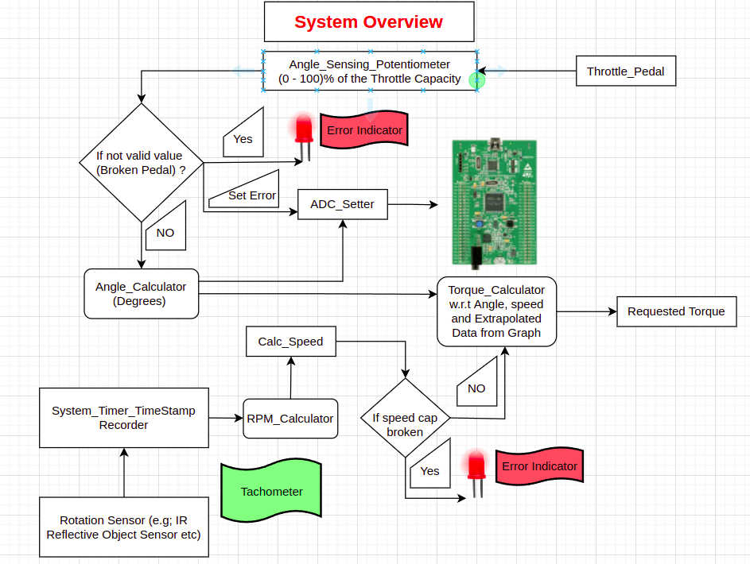
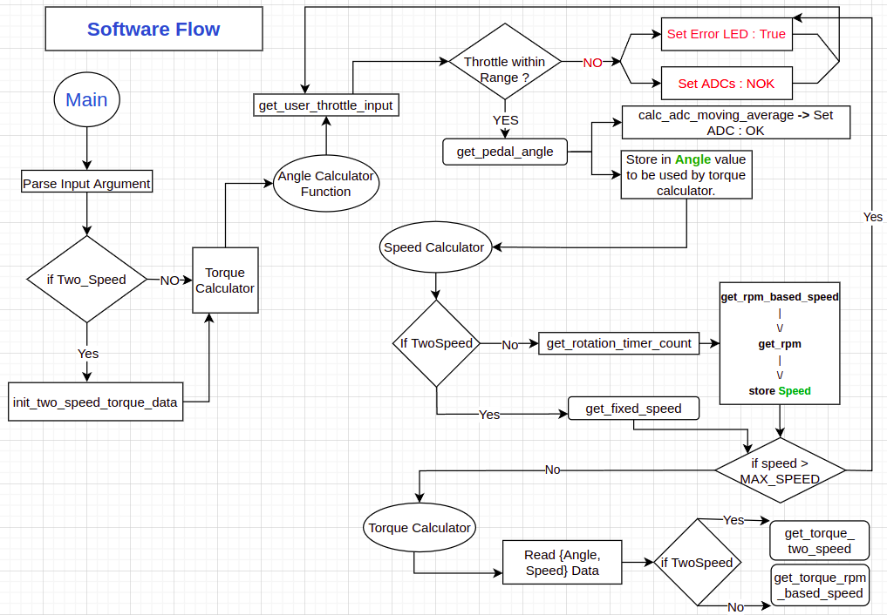
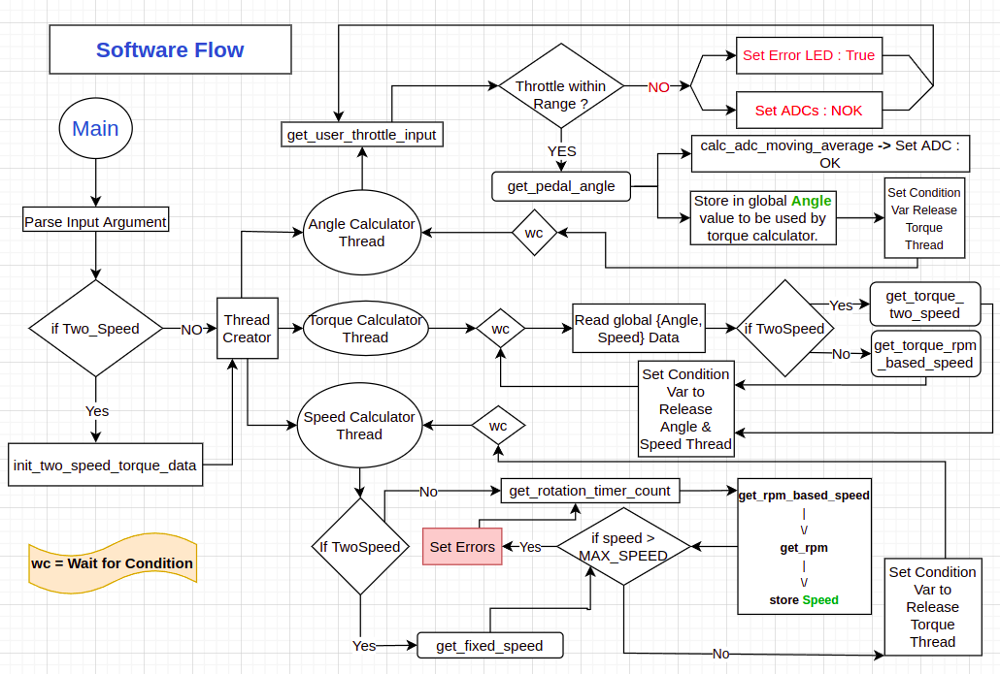
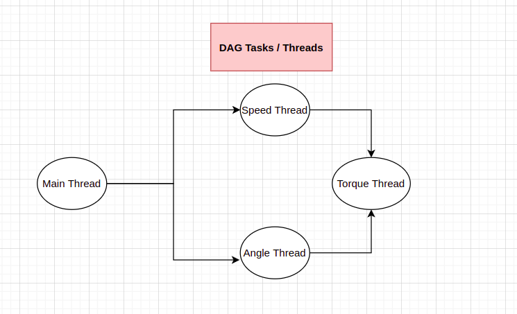
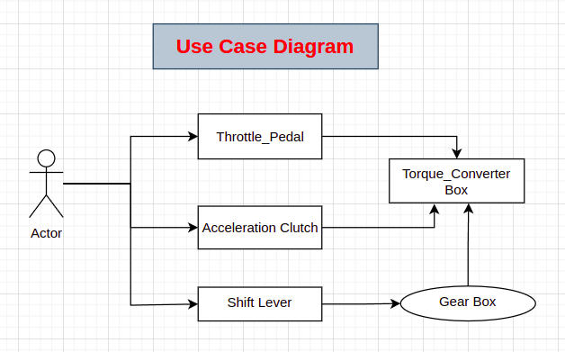

|
My Project
|
In order to implement the part to provide requested Torque, following are high level requirements:
With reference to the above requirements, the system should present a holistic view. Such a view should be constituted of proper input and output interfaces. Furthermore, intermediate subsystems should be able to properly process inputs and provide relevant output. Software should be robust enough to handle corner / error cases. The following figure depicts such an overview for our desired system.

Above image shows the system which has two basic inputs, namely, throttle pedal and engine rotation sensor. Throttle pedal is supposed to be a mechanical object whose position can be sensed by analogue potentiometer whose relative position can provide the applied throttle pedal angle with respect to its total mechanical capacity. For the sake of demo, if applied throttle pedal is below 5% of its total 100% capacity, it is considered to be broken as it is assumed to have some default position before the driver can push it even further. In case of the error, further angle of throttle pedal is not deduced, rather simply error LED is turned to indicate the problem in the vehicle. Moreover, the corresponding ADCs get a predefine error value to be transferred to the respective MCU. In case the applied throttle pedal is in range, then it is followed by calculation of respective throttle pedal angle and calculation of ADC values. The adc values are returned with their moving average with each new ADC sample.
The second input can be received from a sensor which generates pulses / interrupts with every rotation of the respective engine part. One of such sensors can be an IR reflective object sensor or Hall sensor which generates pulses everytime they encounter end of a rotation through a fixed point marker. The time between two such pulses provides us means by which we can calculate rotations per minute (RPM) followed by the speed. In case, for any reason, speed goes above its cap the system indicates error / warning via error LED.
Once angle of applied throttle pedal and speed are obtained, a relative torque value can be obtained. Let us observe how this is done in software.
In order to realize the model presented in system overview, there are multiple approaches. From a high level perspective, a simpler design would constitute a sequential program where we can calculate angle of the throttle pedal followed by speed and torque calculation. Following image shows a simpler sequential approach to do this task:

The above image shows structure of the code flow in a simple setting. Starting from the main the program presents the facility of configuration of application. With respect to the provide data graph, showing relation between speed, angle and torque, one of the modes calculates torque based on fixed two speed values SPEED_AT_REST (=0Km/h) and SPEED_AT_MOVE (=50km/h). This is also the default mode of execution. The second mode of execution calculates torque based on randomly selected speed values between the range SPEED_AT_REST (=0Km/h) and SPEED_AT_MOVE (=50km/h).
After parsing the input, the Torque_Calculaator function first calls the Angle calculator which internally received hypothetical applied threshold pedal value in percentage of total 100% capacity. If that is in range, as explained above, it followes with angle calculation and ADC calculation. In case of error, the ADCs of both, channel 0 and channel 1, are set with ADC error value. Then the Torque_Calculaator calls the function to receive speed based on the chosen option. For the demo purpose, any random speed value below 25 is considered to be SPEED_AT_REST and anything above 25 is considered to be SPEED_AT_MOVE. Once the hypothetical speed of the vehicle is calculated, the torque is calculated with respect to the chosen speed mode.
The torque calculation is implemented, for the purpose of demo, in two ways to show trade-off between performance and memory requirements. In one of the methods, a predefined data buffer is filled with torque values with respect to each possible value of applied throttle pedal. This approach is implemented only for two speed mode, since in this case we need only two such buffers, as the random speed mode will require substantially larger amount of memory. The second approach calculates torque on the fly, with no extra memory requirements, but substantially more number of instructions to calculate the torque as the angle of throttle pedal is pushed to its limits. The provided data graph shows a non-linear relation between speed, angle and torque. The graph did not show one to one correspondence between the values depicted at X-axis and Y-axis to help deduce relation between such quantities. A more practical approach could have been to create a relation between such quantities with respect to two linear curves of the graph which bend at a specific throttle angle showing the non-linearity relation. However, to keep things simpler, in this application, the given data is extrapolated with linear incremental steps for each of the random and two speed values between the range [SPEED_AT_REST, SPEED_AT_MOVE] and the applied throttle angle.
The provided simple software flow does not inculcate any kind of threaded implementation which is another flavor of doing the exact same set of calculations with each having their own context. Such a software flow is given below:

The program starts with the main with similar command line options; however, an additional option, which is not visible in the diagram, is available to the user to perform the angle, speed and torque calculation in multi-threaded manner. In this manner, the same set of functions, which are described above, are given their own execution context with respectively spawned threads. In order to not have data race condition, the threads communicate with each other using boolean conditions to execution their respective instructions. Such conditions are protected using a shared mutex between all three threads. In this simple multi-threaded case, the torque thread only calculates the torque once andle and speed threads set their booleans to true. Once the torque thread is done calculating its requested value, those booleans are set to false and only then angle and speed threads initiate their work in parallel. This kind of relation can easily be shown using a directed acyclic graph and such tasks are known as DAG tasks.
Even though this was not a specific requirement of this software use case, still this is included for the purpose of demo only as depicted below:

According to the above relation of task nodes, torque thread cannot begin its execution as long as angle and speed threads are not finished while angle and speed threads cannot start before main; however, they both can execute in parallel.
Finally, we can see the use case of such a system from the user's perspective using the use-case diagram below:

Above diagram shows a fairly simple and straightforward use case where an actor/driver pushes the throttle pedal along with the release of the acceleration clutch pedal assuming an old manual gear car. The shift level has to be in appropriate place for the car to be in moving condition. The actor/driver provides his/her input with the afforemention three mechanical interfaces visible to the user while the intermediate subsystems like angle and speed calculators, which are invisible to the user, perform their respective tasks. Once they are done the corresponding mechanical instructions are transmitted to the torque converter box and the user can acquire the requested torque from the car.
This software use case was very interesting and intriguing to work with at the same time. However, there were ambiguities in the given data and their relation with actual requirement. For example, the adc values were to be calculated, however apart from their use in moving average, there is no mentioning of their usage in calculating the torque. Furthermore, the graph showing relation between angle, speed and torque does not show clearly show relation between x-axis and y-axis numbers as explained above. These points can be improved to make things less obvious for the candidate if these were not deliberately left open for the candidate to interprete. A little more insight into the parts responsible for torque calculation can provide some learning to the readers like me who are not familiar with them. It may help them come up with even more interesting implementation and improvement ideas.
Lastly, if this was a real life task, I would have provided more concrete details to the reader for a better design approach. In such a scenario, contrary to this design which is largely hypothetical, the design could have been more realistic with respect to software point of view. Furthermore, the critical real-time timing requirements would have enforced a stricter and more optimized design strategy considering all possible trade offs with respect to required computation, memory requirements, safety of the shared data and inter-process commuication.
Note: The instruction which was shared to include images in doxygen documentation is incorrect. For example in the instruction to add Pedalimage there is a single '.' before '/doc/' which did not work properly. Adding another '.' works just fine.
1.8.17